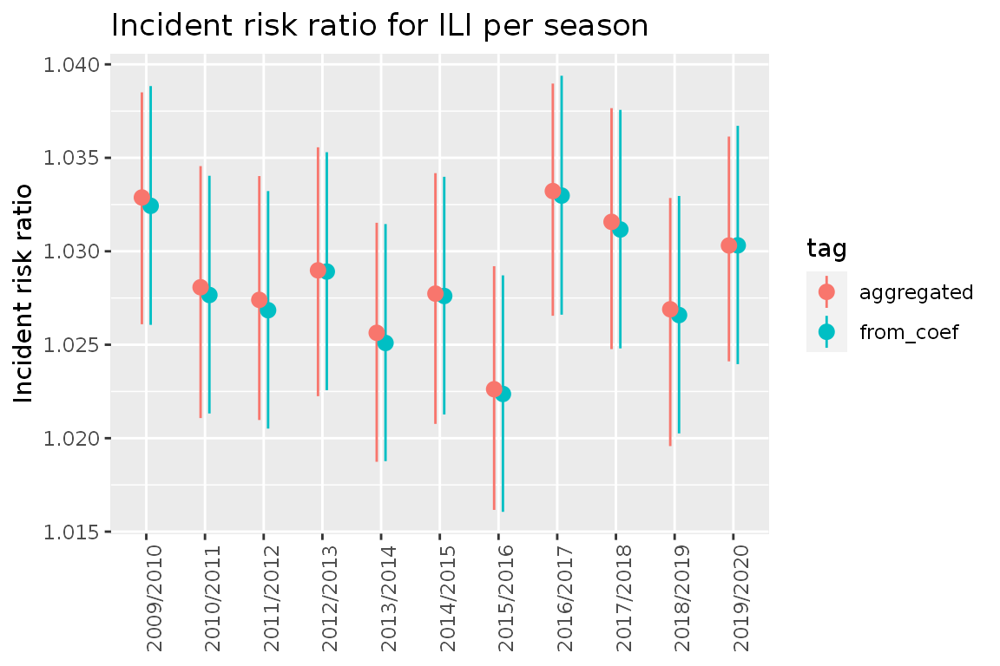

Introduction to attrib
Aurora Hofman
2020-07-21
intro.Rmdlibrary(attrib) #> PACKAGE: attrib #> Version: 2020.07.29 at 11:03
Introduction
attrib provides a way of estimating what the mortality would have been if some given exposures are set to a reference value. By using simulations from the posterior distribution of all coefficients we can easily aggregate over time and locations while still estimating valid credible intervals.
This vignette will go through:
- how to use
fit_attribto fit the model to the data - how to use
est_attribto estimate the mortality under different scenarios (i.e. when the exposures are at reference values and at observed values) - some examples of usages of the resulting dataset
Data example
We will use the datasets fake_data_county and fake_data_nation.
fake_data_county consists of fake mortality data for all counties of Norway on a weekly basis from 2010 until 2020. The dataset consists of the following features:
- location_code: Location code of the different counties
- week: Week number
- season: Years of the season
- year: Year
- yrwk: Year and week
- x: Number of weeks from the start of the season
- pop: Population size
- pr100_ili: Percentage of doctors consultations diagnosed with influenza like illnesses
- pr100_ili_lag_1: pr_100_ili lagged with one week
- temperature: Temperature
- temperature_high: number of heatwaves
- deaths: number of deaths
fake_data_nation is a similar dataset at the national level.
data_fake_county <- attrib::data_fake_county data_fake_nation <- attrib::data_fake_nation head(data_fake_county, 5) #> location_code week season year yrwk x pop pr100_ili #> 1: county03 1 2009/2010 2010 2010-01 24 693494 1.9011202 #> 2: county03 1 2010/2011 2011 2011-01 24 693494 0.9246802 #> 3: county03 1 2011/2012 2012 2012-01 24 693494 1.1543753 #> 4: county03 1 2012/2013 2013 2013-01 24 693494 1.3947382 #> 5: county03 1 2013/2014 2014 2014-01 24 693494 1.7962545 #> pr100_ili_lag_1 temperature temperature_high deaths #> 1: 1.8916383 2.39975858 0 108 #> 2: 0.7129761 1.90199543 0 104 #> 3: 0.9264079 -6.82610667 0 107 #> 4: 1.1649833 -4.28041946 0 117 #> 5: 1.6253183 0.07310006 0 113
In this example we will look at the exposures pr100_ili_lag_1 and temperature_high and calculate the attributable mortality due to these exposures.
Fitting using fit_attrib
County level
We want to estimate the attributable mortality due to ILI and heatwaves. attrib lets us fit models with both fixed and random effect and offsets using linear mixed models (LMM).
We use the glmer function from the lme4 package. In practice, this means we must specify the response, offsets, the fixed effects, and the random effects. In our case we will model the response deaths as a function of:
- the fixed effects:
- temperature_high
- pr100_ili_lag_1
- sin(2 * pi * (week - 1) / 52)
- cos(2 * pi * (week - 1) / 52)
- the random effects:
- (1|location_code)
- (pr100_ili_lag_1|season)
- the offset:
- log(pop)
#response response <- "deaths" # fixed effects fixef_county <- " temperature_high + pr100_ili_lag_1 + sin(2 * pi * (week - 1) / 52) + cos(2 * pi * (week - 1) / 52)" #random effects ranef_county <- "(1|location_code) + (pr100_ili_lag_1|season)" #offset offset_county <- "log(pop)"
Now we fit the model using fit_attrib.
fit_county <- fit_attrib(data_fake_county, response = response, fixef = fixef_county, ranef = ranef_county, offset = offset_county)
This results in the following fit:
fit_county #> Generalized linear mixed model fit by maximum likelihood (Laplace #> Approximation) [glmerMod] #> Family: poisson ( log ) #> Formula: deaths ~ temperature_high + pr100_ili_lag_1 + sin(2 * pi * (week - #> 1)/52) + cos(2 * pi * (week - 1)/52) + offset(log(pop)) + #> (1 | location_code) + (pr100_ili_lag_1 | season) #> Data: data #> AIC BIC logLik deviance df.resid #> 44427.85 44488.60 -22204.92 44409.85 6305 #> Random effects: #> Groups Name Std.Dev. Corr #> season (Intercept) 0.003392 #> pr100_ili_lag_1 0.003634 -0.89 #> location_code (Intercept) 0.000000 #> Number of obs: 6314, groups: season, 12; location_code, 11 #> Fixed Effects: #> (Intercept) temperature_high #> -8.80487 0.08337 #> pr100_ili_lag_1 sin(2 * pi * (week - 1)/52) #> 0.03828 0.01821 #> cos(2 * pi * (week - 1)/52) #> 0.06821 #> convergence code 0; 0 optimizer warnings; 1 lme4 warnings
Note that fit has the added attributes offset (saving the offset name) and fit_fix (the coefficients of the linear model fitted on only the fixed effects). These are needed by est_attrib to create the dataset containing only the fixed effects.
National level
We estimate the same as before But on a national level, meaning we remove the random effect (1|location_code) since we only have one location code. This gives the following features:
- the fixed effects:
- temperature_high
- pr100_ili_lag_1
- sin(2 * pi * (week - 1) / 52)
- cos(2 * pi * (week - 1) / 52)
- the random effects:
- (pr100_ili_lag_1|season)
- the offset:
- log(pop)
# take in the fixed effects response = "deaths" fixef_nation <- "temperature_high + pr100_ili_lag_1 + sin(2 * pi * (week - 1) / 52) + cos(2 * pi * (week - 1) / 52)" #take in the random effects ranef_nation <- "(pr100_ili_lag_1|season)" # take in the offset offset_nation <- "log(pop)"
fit_nation <- fit_attrib(data_fake_nation, response = response, fixef = fixef_nation, ranef = ranef_nation, offset = offset_nation)
Using the sim function
The sim function can be used to generate simulations for all the rows in our data.
It first generates 500 simulations from the posterior distribution of the coefficients from out fit before applying these coefficients on our dataset generating 500 simulations and expected mortality for each line. This is quite generic. Hence if the goal is to compute attributable mortality or incident risk ratios we use est_attrib as shown in a later part of the vignette.
sim_data <- sim(fit_nation, data_fake_nation) head(sim_data[id_row == 1], 5) #> location_code week season year yrwk x pop pr100_ili #> 1: norway 1 2009/2010 2010 2010-01 24 5367580 1.929324 #> 2: norway 1 2009/2010 2010 2010-01 24 5367580 1.929324 #> 3: norway 1 2009/2010 2010 2010-01 24 5367580 1.929324 #> 4: norway 1 2009/2010 2010 2010-01 24 5367580 1.929324 #> 5: norway 1 2009/2010 2010 2010-01 24 5367580 1.929324 #> pr100_ili_lag_1 temperature temperature_high deaths id_row sim_id sim_value #> 1: 1.919701 -3.913114 0 942 1 1 915.7885 #> 2: 1.919701 -3.913114 0 942 1 2 914.3755 #> 3: 1.919701 -3.913114 0 942 1 3 908.7990 #> 4: 1.919701 -3.913114 0 942 1 4 926.4106 #> 5: 1.919701 -3.913114 0 942 1 5 924.0806
We can see that we now have multiple expected mortalities for the same dataline. This is due to the coefficient simulations.
Estimating attributable mortality using est_attrib
To estimate attributable mortality we simulate:
- the estimated mortality for observed exposures
- the estimated mortality for the exposures set to reference values
This is easily done using est_attrib.
We need to give the fit, the dataset, and the exposures with reference values. est_attrib will then using the arm::sim function to generate simulations of the underlying posterior distribution. attrib::sim will then combine the simulated coefficients to estimate the modeled outcome (i.e. number of deaths) for each simulation.
exposures <- list( "temperature_high" = 0, "pr100_ili_lag_1" = 0) est_attrib_sim_county <- attrib::est_attrib(fit_county, data_fake_county, exposures = exposures) est_attrib_sim_nation <- attrib::est_attrib(fit_nation, data_fake_nation, exposures = exposures ) head(est_attrib_sim_county, 5) #> location_code week season year yrwk x pop pr100_ili #> 1: county03 1 2009/2010 2010 2010-01 24 693494 1.9011202 #> 2: county03 1 2010/2011 2011 2011-01 24 693494 0.9246802 #> 3: county03 1 2011/2012 2012 2012-01 24 693494 1.1543753 #> 4: county03 1 2012/2013 2013 2013-01 24 693494 1.3947382 #> 5: county03 1 2013/2014 2014 2014-01 24 693494 1.7962545 #> pr100_ili_lag_1 temperature temperature_high deaths id sim_id #> 1: 1.8916383 2.39975858 0 108 1 1 #> 2: 0.7129761 1.90199543 0 104 2 1 #> 3: 0.9264079 -6.82610667 0 107 3 1 #> 4: 1.1649833 -4.28041946 0 117 4 1 #> 5: 1.6253183 0.07310006 0 113 5 1 #> sim_value_exposures=observed sim_value_temperature_high=0 #> 1: 120.0032 120.0032 #> 2: 113.9892 113.9892 #> 3: 115.6886 115.6886 #> 4: 116.7880 116.7880 #> 5: 119.0223 119.0223 #> sim_value_pr100_ili_lag_1=0 #> 1: 111.3485 #> 2: 111.1649 #> 3: 111.7695 #> 4: 111.8674 #> 5: 111.9362
We can see in the above dataset that the columns id, sim_id, sim_value_exposures=observed, sim_value_temperature_high=0, sim_value_pr100_ili_lag_1=0 are added to the previous set of columns. For each row in the original dataset we now have 500 rows, one for each of the simulations done by est_attrib. In each row we see the estimate of the number of deaths given a reference value for sim_value_temperature_high and sim_value_pr100_ili_lag_1.
To make the data processing easier later we convert the dataset from wide to long form and collapse the estimated mortality
est_attrib_county_long<-data.table::melt.data.table(est_attrib_sim_county, id.vars = c("location_code", "season", "x", "week", "id", "sim_id", "deaths", "sim_value_exposures=observed"), measure.vars = c("sim_value_temperature_high=0", "sim_value_pr100_ili_lag_1=0")) data.table::setnames(est_attrib_county_long, "variable", "attr") head(est_attrib_county_long, 5) #> location_code season x week id sim_id deaths #> 1: county03 2009/2010 24 1 1 1 108 #> 2: county03 2010/2011 24 1 2 1 104 #> 3: county03 2011/2012 24 1 3 1 107 #> 4: county03 2012/2013 24 1 4 1 117 #> 5: county03 2013/2014 24 1 5 1 113 #> sim_value_exposures=observed attr value #> 1: 120.0032 sim_value_temperature_high=0 120.0032 #> 2: 113.9892 sim_value_temperature_high=0 113.9892 #> 3: 115.6886 sim_value_temperature_high=0 115.6886 #> 4: 116.7880 sim_value_temperature_high=0 116.7880 #> 5: 119.0223 sim_value_temperature_high=0 119.0223
We can see that the columns sim_value_temperature_high=0, sim_value_pr100_ili_lag_1=0 are now collapsed into the new column attr and value with attr describing which exposure we have and value giving the corresponding reference value.
est_attrib_nation_long<-data.table::melt.data.table(est_attrib_sim_nation, id.vars = c("location_code", "season", "x", "week", "id", "sim_id", "deaths", "sim_value_exposures=observed"), measure.vars = c("sim_value_temperature_high=0", "sim_value_pr100_ili_lag_1=0")) data.table::setnames(est_attrib_nation_long, "variable", "attr")
Compare the national data to data aggregated from county to national level.
We will now aggregate our two simulated datasets (one on a county level and one on a national level) to aid in comparison.
Aggregate from county/weekly to national/seasonal
We proceed by aggregating the county dataset to the national/seasonal level. Afterwards we calculate the expected attributable mortality, exp_attr, by subtracting value (the simulated expected number of deaths given the reference value of the exposure) from the sim_value_exposures=observed.
To be able to separate this dataset from the other we add a tag.
aggregated_county_to_nation <- est_attrib_county_long[,.( "sim_value_exposures=observed" = sum(`sim_value_exposures=observed`), value = sum(value), deaths = sum(deaths) ), keyby = .(season, attr, sim_id)] # Add exp_attr, exp_irr and a tag. aggregated_county_to_nation[, exp_attr:= (`sim_value_exposures=observed` - value)] aggregated_county_to_nation[, tag := "aggregated_from_county"] head(aggregated_county_to_nation, 5) #> season attr sim_id sim_value_exposures=observed #> 1: 2009/2010 sim_value_temperature_high=0 1 25262.13 #> 2: 2009/2010 sim_value_temperature_high=0 2 25154.73 #> 3: 2009/2010 sim_value_temperature_high=0 3 25169.86 #> 4: 2009/2010 sim_value_temperature_high=0 4 24954.97 #> 5: 2009/2010 sim_value_temperature_high=0 5 25195.75 #> value deaths exp_attr tag #> 1: 25065.55 25481 196.5829 aggregated_from_county #> 2: 24930.97 25481 223.7663 aggregated_from_county #> 3: 24974.96 25481 194.8987 aggregated_from_county #> 4: 24764.41 25481 190.5644 aggregated_from_county #> 5: 25000.06 25481 195.6982 aggregated_from_county
Aggregating the national model per season
For the national model we aggregate over seasons and create exp_attr in the same way as above.
aggregated_nation <- est_attrib_nation_long[, .( "sim_value_exposures=observed" = sum(`sim_value_exposures=observed`), value = sum(value), deaths = sum(deaths) ), keyby = .(season, attr, sim_id)] aggregated_nation[, exp_attr:= (`sim_value_exposures=observed` - value)] aggregated_nation[, tag:= "nation"] head(aggregated_nation, 5) #> season attr sim_id sim_value_exposures=observed #> 1: 2009/2010 sim_value_temperature_high=0 1 24731.49 #> 2: 2009/2010 sim_value_temperature_high=0 2 24803.66 #> 3: 2009/2010 sim_value_temperature_high=0 3 25160.55 #> 4: 2009/2010 sim_value_temperature_high=0 4 24844.94 #> 5: 2009/2010 sim_value_temperature_high=0 5 24755.54 #> value deaths exp_attr tag #> 1: 24673.70 24846 57.79437 nation #> 2: 24738.19 24846 65.46753 nation #> 3: 25096.50 24846 64.05752 nation #> 4: 24784.20 24846 60.73846 nation #> 5: 24693.81 24846 61.73034 nation
For simplicity we data.table::rbindlist the two datasets together.
Calculate simulation quantiles.
The next thing to do is to aggregate away the simulations. The benefits of having the simulations is the possibility it gives to efficiently compute all desired quantiles. For this example we will use the .05, .5 and .95 quantiles.
# Quantile functins q05 <- function(x){ return(quantile(x, 0.05)) } q95 <- function(x){ return(quantile(x, 0.95)) }
We compute the quantiles for exp_attr in the following way.
col_names <- colnames(data_national) data.table::setkeyv(data_national, col_names[!col_names %in% c("exp_attr", "sim_id", "sim_value_exposures=observed", "value", "deaths")]) aggregated_sim_seasonal_data_national<- data_national[, unlist(recursive = FALSE, lapply(.(median = median, q05 = q05, q95 = q95), function(f) lapply(.SD, f) )), by = eval(data.table::key(data_national)), .SDcols = c("exp_attr")] head(aggregated_sim_seasonal_data_national,5) #> season attr tag #> 1: 2009/2010 sim_value_temperature_high=0 aggregated_from_county #> 2: 2009/2010 sim_value_temperature_high=0 nation #> 3: 2009/2010 sim_value_pr100_ili_lag_1=0 aggregated_from_county #> 4: 2009/2010 sim_value_pr100_ili_lag_1=0 nation #> 5: 2010/2011 sim_value_temperature_high=0 aggregated_from_county #> median.exp_attr q05.exp_attr q95.exp_attr #> 1: 199.91951 187.90920 212.01036 #> 2: 59.66381 55.38199 64.05863 #> 3: 650.49063 549.06991 759.00542 #> 4: 281.90846 146.86415 431.33455 #> 5: 482.02903 453.57075 510.86389
We can now see that we have credible intervals and estimates for attributable deaths for all exposures.
Plot to compare the national with the aggregated county to national model
To be able to compare the two models we make a point range plot using ggplot2.
q <- ggplot(aggregated_sim_seasonal_data_national[attr == "sim_value_pr100_ili_lag_1=0"], aes(x = season, y = median.exp_attr, group = tag, color = tag)) q <- q + geom_pointrange(aes(x = season, y = median.exp_attr, ymin = q05.exp_attr, ymax = q95.exp_attr), position = position_dodge(width = 0.3)) q <- q + ggtitle("Attributable mortality due to ILI in Norway according to 2 models") q <- q + scale_y_continuous("Estimated attributable mortality") q <- q + theme(axis.text.x = element_text(angle = 90),axis.title.x=element_blank()) q <- q + labs(caption = glue::glue("Aggregated county model: Attributable mortality modeled on a county level before beeing aggregated up to a national level.\n National model: Attributable mortality modeled on a national level.")) q

Comparing cumulative sums over seasons
When operating on the national level, we prefer to aggregate the county model to national level (instead of using the national model). This ensures consistent results at all geographical levels.
aggregated_county_to_nation <- est_attrib_county_long[, .( "sim_value_exposures=observed" = sum(`sim_value_exposures=observed`), value = sum(value), deaths = sum(deaths) ), keyby = .(season, x, week, attr, sim_id)] aggregated_county_to_nation[, exp_attr:= (`sim_value_exposures=observed` - value)] aggregated_county_to_nation[, exp_irr:= (`sim_value_exposures=observed` /value)] head(aggregated_county_to_nation,5) #> season x week attr sim_id #> 1: 2009/2010 23.5 53 sim_value_temperature_high=0 1 #> 2: 2009/2010 23.5 53 sim_value_temperature_high=0 2 #> 3: 2009/2010 23.5 53 sim_value_temperature_high=0 3 #> 4: 2009/2010 23.5 53 sim_value_temperature_high=0 4 #> 5: 2009/2010 23.5 53 sim_value_temperature_high=0 5 #> sim_value_exposures=observed value deaths exp_attr exp_irr #> 1: 861.8275 861.8275 840 0 1 #> 2: 863.9340 863.9340 840 0 1 #> 3: 858.6652 858.6652 840 0 1 #> 4: 853.5234 853.5234 840 0 1 #> 5: 852.7982 852.7982 840 0 1
Again we compute the quantiles.
col_names <- colnames(aggregated_county_to_nation) data.table::setkeyv(aggregated_county_to_nation, col_names[!col_names %in% c("exp_attr", "exp_irr","sim_id", "exposures", "sim_value_exposures=observed", "value")]) aggregated_county_to_nation_weekly <- aggregated_county_to_nation[, unlist(recursive = FALSE, lapply(.(median = median, q05 = q05, q95 = q95), function(f) lapply(.SD, f) )), by=eval(data.table::key(aggregated_county_to_nation)), .SDcols = c("exp_attr", "exp_irr")]
We then estimate the cumulative sums of attributable mortality and corresponding credible intervals.
aggregated_county_to_nation_weekly[, cumsum := cumsum(median.exp_attr), by = .( attr, season)] aggregated_county_to_nation_weekly[, cumsum_q05 := cumsum(q05.exp_attr), by = .( attr, season)] aggregated_county_to_nation_weekly[, cumsum_q95 := cumsum(q95.exp_attr), by = .( attr, season)] head(aggregated_county_to_nation_weekly, 5) #> season x week attr deaths median.exp_attr #> 1: 2009/2010 23.5 53 sim_value_temperature_high=0 840 0.00000 #> 2: 2009/2010 23.5 53 sim_value_pr100_ili_lag_1=0 840 0.00000 #> 3: 2009/2010 24.0 1 sim_value_temperature_high=0 897 0.00000 #> 4: 2009/2010 24.0 1 sim_value_pr100_ili_lag_1=0 897 45.85305 #> 5: 2009/2010 25.0 2 sim_value_temperature_high=0 861 0.00000 #> median.exp_irr q05.exp_attr q05.exp_irr q95.exp_attr q95.exp_irr cumsum #> 1: 1.000000 0.00000 1.000000 0.00000 1.000000 0.00000 #> 2: 1.000000 0.00000 1.000000 0.00000 1.000000 0.00000 #> 3: 1.000000 0.00000 1.000000 0.00000 1.000000 0.00000 #> 4: 1.053198 38.73443 1.044743 53.59379 1.062495 45.85305 #> 5: 1.000000 0.00000 1.000000 0.00000 1.000000 0.00000 #> cumsum_q05 cumsum_q95 #> 1: 0.00000 0.00000 #> 2: 0.00000 0.00000 #> 3: 0.00000 0.00000 #> 4: 38.73443 53.59379 #> 5: 0.00000 0.00000
We can then plot the estimated cumulative attributable mortality over influenza seasons in Norway
library(ggplot2) q <- ggplot( data = aggregated_county_to_nation_weekly[ season %in% c( "2015/2016", "2016/2017", "2017/2018", "2018/2019", "2019/2020" ) & attr == "sim_value_pr100_ili_lag_1=0" ], aes( x = x, y = cumsum, group = season, color = season, fill = season ) ) q <- q + geom_line() q <- q + geom_ribbon( data = aggregated_county_to_nation_weekly[ season %in% c("2019/2020") & attr == "sim_value_pr100_ili_lag_1=0" ], aes( ymin = cumsum_q05, ymax = cumsum_q95 ), alpha = 0.4, colour = NA ) q <- q + scale_y_continuous("Estimated cumulative attributable mortality") q <- q + ggtitle("Estimated cumulative attributable mortality over influenza seasons in Norway") q

We can also plot the estimated weekly attributable mortality in Norway
q <- ggplot( data = aggregated_county_to_nation_weekly[attr == "sim_value_pr100_ili_lag_1=0"], aes(x = x, y = cumsum, group = season) ) q <- q + geom_line( data = aggregated_county_to_nation_weekly[ season != "2019/2020" & attr == "sim_value_pr100_ili_lag_1=0" ], aes( x = x, y = median.exp_attr, group = season ), color = "grey" ) q <- q + geom_line( data = aggregated_county_to_nation_weekly[ season == "2019/2020" & attr == "sim_value_pr100_ili_lag_1=0" ], aes( x = x, y = median.exp_attr, group = season ), color = "blue" ) q <- q + geom_ribbon( data = aggregated_county_to_nation_weekly[ season == "2019/2020" & attr == "sim_value_pr100_ili_lag_1=0" ], aes( x = x, ymin = q05.exp_attr, ymax = q95.exp_attr ), fill = "blue", alpha=0.4 ) q <- q + scale_y_continuous("Estimated attributable mortality") q <- q + ggtitle("Estimated mortality due to ILI per week") q

Incident rate ratio
Until now we have focused on estimating attributable mortality. Now we will investigate computing the incident rate ratio (IRR) for pr100_ili_lag_1. To do this we will use the fit made by fit_attrib on the county dataset but we will change the values for pr100_ili_lag_1 to 1 (IRRs are generally expressed as the effect of the exposure changing from 0 to 1).
data_fake_county_irr <- data.table::copy(data_fake_county) data_fake_county_irr[, pr100_ili_lag_1 := 1] head(data_fake_county_irr, 5) #> location_code week season year yrwk x pop pr100_ili #> 1: county03 1 2009/2010 2010 2010-01 24 693494 1.9011202 #> 2: county03 1 2010/2011 2011 2011-01 24 693494 0.9246802 #> 3: county03 1 2011/2012 2012 2012-01 24 693494 1.1543753 #> 4: county03 1 2012/2013 2013 2013-01 24 693494 1.3947382 #> 5: county03 1 2013/2014 2014 2014-01 24 693494 1.7962545 #> pr100_ili_lag_1 temperature temperature_high deaths #> 1: 1 2.39975858 0 108 #> 2: 1 1.90199543 0 104 #> 3: 1 -6.82610667 0 107 #> 4: 1 -4.28041946 0 117 #> 5: 1 0.07310006 0 113
Then we can set the reference value to zero and hence obtain the IRR for the given exposure.
exposures_irr = c(pr100_ili_lag_1 = 0)
Now we use est_attrib to create the simulations.
est_attrib_sim_county_irr <- attrib::est_attrib( fit_county, data_fake_county_irr, exposures = exposures_irr ) head(est_attrib_sim_county_irr, 5) #> location_code week season year yrwk x pop pr100_ili #> 1: county03 1 2009/2010 2010 2010-01 24 693494 1.9011202 #> 2: county03 1 2010/2011 2011 2011-01 24 693494 0.9246802 #> 3: county03 1 2011/2012 2012 2012-01 24 693494 1.1543753 #> 4: county03 1 2012/2013 2013 2013-01 24 693494 1.3947382 #> 5: county03 1 2013/2014 2014 2014-01 24 693494 1.7962545 #> pr100_ili_lag_1 temperature temperature_high deaths id sim_id #> 1: 1 2.39975858 0 108 1 1 #> 2: 1 1.90199543 0 104 2 1 #> 3: 1 -6.82610667 0 107 3 1 #> 4: 1 -4.28041946 0 117 4 1 #> 5: 1 0.07310006 0 113 5 1 #> sim_value_exposures=observed sim_value_pr100_ili_lag_1=0 #> 1: 115.4558 110.7128 #> 2: 115.8260 111.4564 #> 3: 114.9174 110.0759 #> 4: 115.6403 110.5207 #> 5: 116.2542 111.6812
We see we have obtained values for the reference of the exposure in the same way as before. The difference is that we changed the dataset before running est_attrib. This means we will now be observing the difference between pr100_ili_lag_1=0 and pr100_ili_lag_1=1.
We now aggregate to the national seasonal level.
aggregated_county_to_nation_sim_irr <- est_attrib_sim_county_irr[, .( "sim_value_exposures=observed" = sum(`sim_value_exposures=observed`), "sim_value_pr100_ili_lag_1=0"= sum(`sim_value_pr100_ili_lag_1=0`), deaths = sum(deaths) ), keyby = .(season, sim_id)]
Here we generate the IRR:
aggregated_county_to_nation_sim_irr[, exp_irr:= (`sim_value_exposures=observed`/`sim_value_pr100_ili_lag_1=0` )] head(aggregated_county_to_nation_sim_irr,5) #> season sim_id sim_value_exposures=observed sim_value_pr100_ili_lag_1=0 #> 1: 2009/2010 1 25514.60 24466.44 #> 2: 2009/2010 2 25555.66 24679.97 #> 3: 2009/2010 3 25517.14 24509.27 #> 4: 2009/2010 4 25709.89 24666.30 #> 5: 2009/2010 5 25653.52 24773.54 #> deaths exp_irr #> 1: 25481 1.042841 #> 2: 25481 1.035482 #> 3: 25481 1.041122 #> 4: 25481 1.042308 #> 5: 25481 1.035521
Now we can compute the quantiles:
col_names <- colnames(aggregated_county_to_nation_sim_irr) data.table::setkeyv( aggregated_county_to_nation_sim_irr, col_names[!col_names %in% c("exp_irr", "sim_id", "sim_value_exposures=observed", "sim_value_pr100_ili_lag_1=0")] ) aggregated_county_to_nation_irr <- aggregated_county_to_nation_sim_irr[, unlist(recursive = FALSE, lapply(.(median = median, q05 = q05, q95 = q95), function(f) lapply(.SD, f))), by = eval(data.table::key(aggregated_county_to_nation_sim_irr)), .SDcols = c("exp_irr") ] aggregated_county_to_nation_irr[, tag := "aggregated"] aggregated_county_to_nation_irr #> season deaths median.exp_irr q05.exp_irr q95.exp_irr tag #> 1: 2009/2010 25481 1.040124 1.032717 1.047473 aggregated #> 2: 2010/2011 43371 1.035600 1.029207 1.043130 aggregated #> 3: 2011/2012 43130 1.038680 1.032044 1.046005 aggregated #> 4: 2012/2013 43305 1.040436 1.033505 1.047480 aggregated #> 5: 2013/2014 43341 1.039314 1.033022 1.047080 aggregated #> 6: 2014/2015 42989 1.038073 1.031539 1.044972 aggregated #> 7: 2015/2016 43885 1.039154 1.032709 1.046479 aggregated #> 8: 2016/2017 43384 1.036853 1.030294 1.044345 aggregated #> 9: 2017/2018 43715 1.038750 1.031957 1.045889 aggregated #> 10: 2018/2019 42892 1.042429 1.035871 1.049713 aggregated #> 11: 2019/2020 43108 1.040527 1.033908 1.047497 aggregated #> 12: 2020/2021 18877 1.041546 1.034615 1.048889 aggregated
Now we compare the resulting values for IRR with the ones obtained by coef(fit_county)$season and the 90 percent credible interval computed manually using the standard deviation given by summary(fit_county) for pr100_ili_lag_1.
coef_fit_county <- data.table::as.data.table(coef(fit_county)$season) col_names_coef <- c("pr100_ili_lag_1") coef_irr_data <- coef_fit_county[, ..col_names_coef] coef_irr_data[, irr := exp(pr100_ili_lag_1)] coef_irr_data[, q05 := exp(pr100_ili_lag_1 - 1.645 *0.003761)] # 0.003761 is the standard deviation from coef(fit_county) coef_irr_data[, q95 := exp(pr100_ili_lag_1 + 1.645 *0.003761)] coef_irr_data[, tag := "from_coef"] coef_irr_data #> pr100_ili_lag_1 irr q05 q95 tag #> 1: 0.03903384 1.039806 1.033392 1.046259 from_coef #> 2: 0.03486914 1.035484 1.029098 1.041910 from_coef #> 3: 0.03770888 1.038429 1.032024 1.044873 from_coef #> 4: 0.03908609 1.039860 1.033446 1.046313 from_coef #> 5: 0.03863077 1.039387 1.032976 1.045837 from_coef #> 6: 0.03706589 1.037761 1.031361 1.044202 from_coef #> 7: 0.03795133 1.038681 1.032274 1.045127 from_coef #> 8: 0.03601079 1.036667 1.030273 1.043101 from_coef #> 9: 0.03787166 1.038598 1.032192 1.045043 from_coef #> 10: 0.04111602 1.041973 1.035546 1.048439 from_coef #> 11: 0.03946076 1.040250 1.033834 1.046705 from_coef #> 12: 0.04052015 1.041352 1.034929 1.047815 from_coef
Add the correct seasons to the data.
coef_irr_data <- cbind(season = aggregated_county_to_nation_irr$season, coef_irr_data) coef_irr_data #> season pr100_ili_lag_1 irr q05 q95 tag #> 1: 2009/2010 0.03903384 1.039806 1.033392 1.046259 from_coef #> 2: 2010/2011 0.03486914 1.035484 1.029098 1.041910 from_coef #> 3: 2011/2012 0.03770888 1.038429 1.032024 1.044873 from_coef #> 4: 2012/2013 0.03908609 1.039860 1.033446 1.046313 from_coef #> 5: 2013/2014 0.03863077 1.039387 1.032976 1.045837 from_coef #> 6: 2014/2015 0.03706589 1.037761 1.031361 1.044202 from_coef #> 7: 2015/2016 0.03795133 1.038681 1.032274 1.045127 from_coef #> 8: 2016/2017 0.03601079 1.036667 1.030273 1.043101 from_coef #> 9: 2017/2018 0.03787166 1.038598 1.032192 1.045043 from_coef #> 10: 2018/2019 0.04111602 1.041973 1.035546 1.048439 from_coef #> 11: 2019/2020 0.03946076 1.040250 1.033834 1.046705 from_coef #> 12: 2020/2021 0.04052015 1.041352 1.034929 1.047815 from_coef
rbindlist the two datasets together.
total_data_irr <- data.table::rbindlist(list(coef_irr_data, aggregated_county_to_nation_irr), use.names = FALSE) total_data_irr[, pr100_ili_lag_1 := NULL] total_data_irr #> season irr q05 q95 tag #> 1: 2009/2010 1.039806 1.033392 1.046259 from_coef #> 2: 2010/2011 1.035484 1.029098 1.041910 from_coef #> 3: 2011/2012 1.038429 1.032024 1.044873 from_coef #> 4: 2012/2013 1.039860 1.033446 1.046313 from_coef #> 5: 2013/2014 1.039387 1.032976 1.045837 from_coef #> 6: 2014/2015 1.037761 1.031361 1.044202 from_coef #> 7: 2015/2016 1.038681 1.032274 1.045127 from_coef #> 8: 2016/2017 1.036667 1.030273 1.043101 from_coef #> 9: 2017/2018 1.038598 1.032192 1.045043 from_coef #> 10: 2018/2019 1.041973 1.035546 1.048439 from_coef #> 11: 2019/2020 1.040250 1.033834 1.046705 from_coef #> 12: 2020/2021 1.041352 1.034929 1.047815 from_coef #> 13: 2009/2010 1.040124 1.032717 1.047473 aggregated #> 14: 2010/2011 1.035600 1.029207 1.043130 aggregated #> 15: 2011/2012 1.038680 1.032044 1.046005 aggregated #> 16: 2012/2013 1.040436 1.033505 1.047480 aggregated #> 17: 2013/2014 1.039314 1.033022 1.047080 aggregated #> 18: 2014/2015 1.038073 1.031539 1.044972 aggregated #> 19: 2015/2016 1.039154 1.032709 1.046479 aggregated #> 20: 2016/2017 1.036853 1.030294 1.044345 aggregated #> 21: 2017/2018 1.038750 1.031957 1.045889 aggregated #> 22: 2018/2019 1.042429 1.035871 1.049713 aggregated #> 23: 2019/2020 1.040527 1.033908 1.047497 aggregated #> 24: 2020/2021 1.041546 1.034615 1.048889 aggregated #> season irr q05 q95 tag
q <- ggplot( data = total_data_irr, aes( x = season, group = tag, color = tag ) ) q <- q + geom_pointrange( aes( y = irr, ymin = q05, ymax = q95 ), position = position_dodge(width = 0.3) ) q <- q + theme(axis.text.x = element_text(angle = 90),axis.title.x=element_blank()) q <- q + labs(y = "Incident risk ratio") q <- q + ggtitle("Incident risk ratio for ILI per season") q

As we can see these intervals are very similar.
The benefit of the simulated approach is that this process will be equally easy no matter the complexity of what we want to compute the IRR for. We do not have to take into account the variance-covariance matrix at any stage.